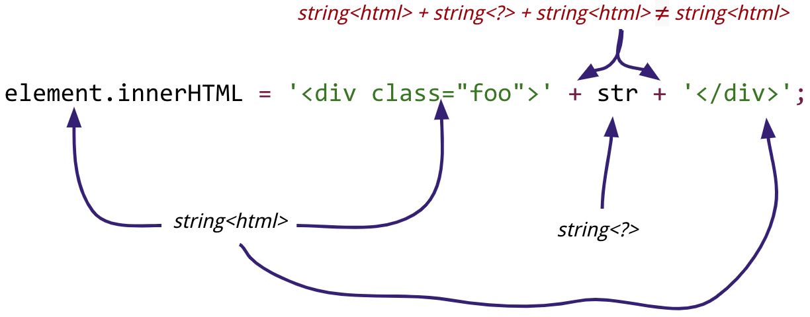
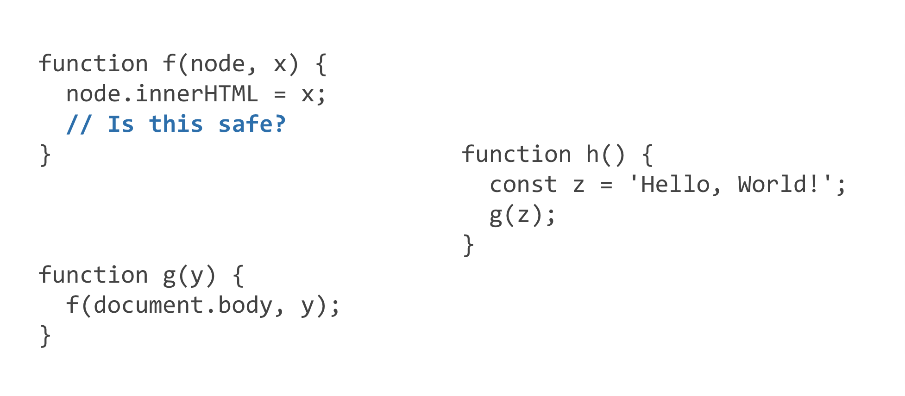
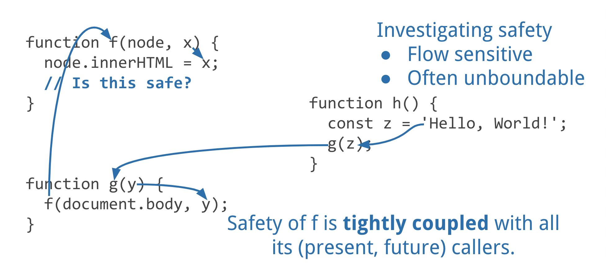

eval back in the bottle
Trusted Types protects web applications from remote code execution by
keeping attacker-controlled strings away from powerful web APIs like
innerHTML and eval. It's the result of almost 8 years of
experimentation within Google on technical measures that help security
specialists assist developers in producing secure code. It's now
Google's primary defense against XSS for most products including the
most sensitive like Gmail.
Others have written about how to use Trusted Types on the client to protect against DOM XSS and “Securing the Tangled Web” by C. Kern explains how Google uses Trusted Types (aka SafeHTML types) on the server.
Here I'd like to talk about other approaches that we in Google Security tried which didn't pan out, and share my thoughts on why Trusted Types delivered where those other approaches didn't.
When I started on Google Calendar around 2005, there was little in
the way of JavaScript infrastructure; jQuery wouldn't be created
until 2006. The only way we knew of to prevent XSS was careful code
review. We were meticulous about checking any code that produced
strings for .innerHTML and tried to use safer DOM APis
where possible despite IE6 performance woes. Then two team members
went on vacation at the same time, stressing the team. Our first
externally discovered XSS dated to that period.
Code review has many benefits, but humans are not good at consistently finding low frequency problems over long periods of time, or quickly and reliably taking into account transitive effects on code not edited.
Code scanners help identify problems early in the development process. For example, Google built JSConformance to guide JavaScript developers away from code patterns (smells) that have proven problematic, and towards safer abstractions. Code scanners work well when the code evolves alongside the scanner; running a code scanner on a codebase that did not often results in a shedload of false positives and true positives that show how code could have been written a bit better, but which individually are not worth the effort to fix.
Code scanners either have to be very strict, increasing the rate of false and trivial-true positives, or they have to occasionally conclude false things. One of the best understood static checkers for client-side code is TypeScript's type system. It makes necessary, pragmatic assumptions so that it's possible to migrate JavaScript to TypeScript, and does a great job identifying common mistakes before they reach production. But it's insufficient for security.
TypeScript : A Note on Soundness
TypeScript's type system allows certain operations that can't be known at compile-time to be safe.
Consider the
capitalOf
program. TypeScript
assumes,
reasonably but incorrectly, that the square bracket operator only
accesses members of the countries table, but it actually allows
access to the Function constructor. This allows an attacker who
controls the inputs to run arbitrary code.
One limitation is that static analyses rarely extend beyond network or memory boundaries. If code trusts a signed input from a micro-service which is written in a different language, it's hard to make use of information about how that input was constructed that was available to static analyzers that ran on that service's code. As we re-architect monolithic services into micro-services, we're perversely limiting the insights we can glean from static analysis.
This is why we in Google want to augment static analysis with runtime enforcement; before a program does things it can't undo, check that critical values were explicitly trusted.
One intuitions about XSS and other injection attacks is that the root cause is a type error.
is vulnerable because it incorrectly assumes that HTML can be derived by adding strings without regards to the kind of content they contain.

Java's annotation system enabled pluggable static type systems which we used to allow developers to put hints about string types so that automated tools can identify where strings of different “types” are unsafely concatenated.
@HTML String linkifyHtml(@HTML String html) { … }
Code that adopted this was easier to reason about, but it did not solve the underlying problems with static analysis. In Java, you can put an @HTML String into a List<Object> but when you take that String out you lose information about whether it's an @HTML String. This is a problem for tools like HTML template languages that use runtime type information, not static types. Pluggable type systems help when almost as widely used as the language's built-in type system but don't help with whole program conclusions if you use third-party code that doesn't plug in the types, or the type system isn't tightly integrated with security-relevant tools.
Concurrently with these efforts, we were working on building secure abstractions: tools and libraries that are safe regardless of how they're used. For example:
These efforts, by and large, delivered on their design goals. They've had a low rate of security-relevant bugs, and where they replaced existing systems, they were roughly as easy to use and were straightforward to migrate to.
Where security-team engaged other teams, those other teams were receptive and happy to adopt. Unfortunately, there are many product teams, so without some measures to guide developers to these tools we had to do a lot of outreach. “Build it and they will come” doesn't apply to solutions to problems that developers don't know they have.
Another problem is that these tools still occasionally need to know the content type of a string. Consider this code:
let userName = account.getUserName();
if (account instanceof SparklyAccount) {
// When we acquired Sparkly, we copied their users' names
// into our DB but their users could enter HTML when creating
// accounts. Don't over-escape.
userName = sanitizeHTML(userName);
} else {
userName = escapeHTML(userName);
}
response.write(myHTMLTemplate.apply({ userName }));
This code is brittle because the logic embeds assumptions about an
external database. The decision about whether userName
is HTML is not made based on anything about the value
of userName, but instead based on something about its
source. This code may be correct, but it's not likely to remain
correct since over-escaping bugs are more visible than security
bugs. If escapeHTML just returned its input given a value known to
be HTML, then the author could always just escape then sanitize.
Worse, it requires the HTML template to embed knowledge about
whether userName is HTML or plain text. If it didn't,
then an auto-escaping template language might render a sparkly
user-name "I <3 ponies!" as
“I &lt;3 ponies!” If the template gets that
assumption wrong then it is vulnerable to XSS.
We saw developers getting into the habit of sprinkling |doNotEscape directives throughout code. Besides being ambiguous, this made us again reliant on a combination of human code review and static analysis to avoid vulnerabilities. It took a lot of work to rid our codebase of those directives, but we did it.
Trusted Types turned out to be the single abstraction that solve
these myriad problems. They have a runtime-type that is accessible
to tools and libraries, they mesh well with dynamic languages, and
they obviate the need for tricky code like the above; if
SparklyAccount.getName returns a TrustedHTML value,
there's no need for the JavaScript to escape or sanitize anything.
The template system knows what to do based on runtime type
information.
Google still invests heavily in tools and tool integration, and now that we've got trusted types to organically guide developers towards tools that just do what they need, our investment is amortized over a large developer base and tools teams don't need to spend as much time advocating solutions to problems that developers may not know they have.
We've been using trusted types within Google across half a dozen languages for 8 years now, and it integrates well with tools, works in both deeply static and deeply dynamic languages, and enables an effective partnership between security specialists and application developers.
But when trying to figure out how to solve DOM XSS in the browser, it's worth explaining why we're excited about trusted types instead of restricting ourselves to new types of Content-Security-Policy (CSP) source-expressions.
To solve DOM XSS with CSP we'd need to answer questions like:
“How do I allow one critical, third-party dependency, whose
code I don't control but which I've concluded is safe, to use
eval without allowing other third-party dependencies to
use eval?” In other words, I can't use CSP to block eval
because 'unsafe-eval'
is all or nothing.
One obvious solution seems to be: just list the JavaScript files
that you want to able to use eval,
innerHTML, and other kinds of sinks. Host-source
provides a clear way to represent a list of JavaScript source files.
The CSP specification could require sink setters to look at the
JavaScript call stack to decide whether to run or not. This idea
has clear precedents, for example, the Java security manager which
has a
mixed
track record. Unfortunately, host-source based CSP policies
have a
poor
track record, and Google
recommends
using nonces instead.
To answer the question above, host-source would need to list individual files, but widely used code bundlers like Webpack combine many JavaScript files into one to reduce load time. Any definition of “privileged code” that doesn't survive web bundling is untenable.
Another problem is that this is assigning a different meaning to host-source than its previous uses in CSP. Existing uses of host-source match against the list when deciding whether to load the content, not when deciding whether to grant privileges to loaded content.
The amount of spec work required is large. Existing JavaScript engines
documents treat source metadata as entirely diagnostic. Node.js's
vm module
lets JavaScript specify the filename used in stack traces, so we
can't just build security barriers on top of metadata like V8's
source_url.
The amount of spec work to thread reliable source metadata around
through JavaScript would be large, and would irreparably break
existing dynamic code loading mechanisms that fetch code and load it
using new Function.
Worse, allowing some files to use a sink is coming at the problem from the wrong direction. We want to grant privilege to some subset of code that we have carefully checked. Let's consider what we have to do to check questions of the form “is this safe?”:

To know whether it's safe to assign x to .innerHTML we
need to figure out where x comes from.

Without trusted types, concluding that f
uses x safely requires us to reason about all of the
present and future callers of f. Unless x
comes from places on our list of host-sources, then are we really
listing the right things? With trusted types, we can focus our
attention on checking that trusted values are properly constructed.
Trusted Types avoids this by letting us ignore f
and g entirely.
At Google, we do use lists of source files. For example, when we
have unsafe APIs, we require calling code to be on a list of code
that has been checked by someone who understands the caveats for
those error-prone APIs. That works when we can guard
import but just doesn't work for global APIs like
eval and the DOM APIs.
At Google, we like nonce-source for deciding whether to load scripts. It may be possible to extend nonce-source to guard APIs like eval, but there are problems. Instead of writing
eval(code)
you might write
eval(code, nonce)
and the JavaScript engine could use the extra argument to decide whether to parse and run code.
This has problems though:
.innerHTML without new
JavaScript syntax.
<script src="…"></script>
not only encourages nonce-reuse, but requires it.
CSP allows listing hashes. This may make sense for commonly used libraries loaded via a CDN, like jQuery. Unlike the other CSP source-expression variants, it is based on something about the value. So that's nice.
It only allows a closed set of possible inputs, so won't extend to
widely used meta-programming code like that in
Promise.denodify
(32M downloads/month).
Google's Security Engineering group tried many things over the last eight years to make it easy to produce complex systems without code-injection vulnerabilities. Often, bits or pieces of those efforts proved useful, but none was sufficient alone. Trusted Types is the unifying theme that ties these individual efforts into a whole that is greater than the sum of its parts.
Trusted Types works because developers are already in the habit of looking at the types of an API and working backwards to figure out how to get what they have as that type. Trusted Types are just types that have additional security properties. This enables a sensible division of duties: security specialists provide safe abstractions for creating trusted values from unsafe inputs, and developers get to use powerful APIs safely. In the rare case where the safe abstractions aren't sufficient, security specialists work with developers to craft new abstractions, or produce reliable, application-specific code.